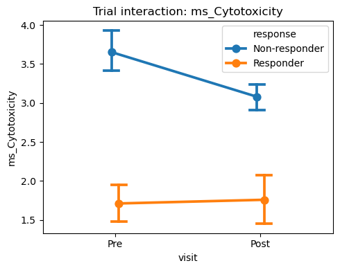
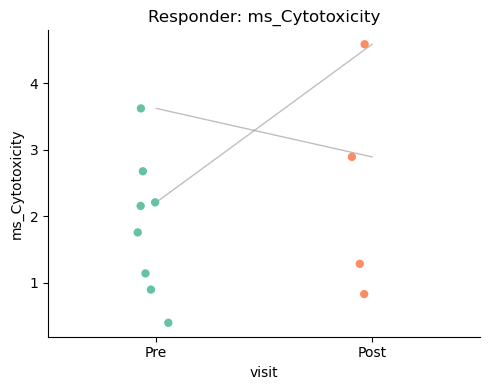
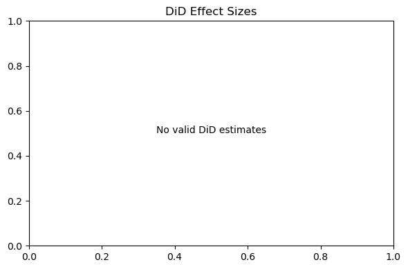

[1]:
import warnings
warnings.filterwarnings('ignore')
import pandas as pd
import numpy as np
import matplotlib.pyplot as plt
import scanpy as sc
import sctrial as st
pd.options.mode.chained_assignment = None
Example: Immunotherapy Response in Melanoma
Dataset: Sade-Feldman et al. (Cell 2018)
Background: Sade-Feldman et al. (Cell 2018) profiled immune cells from patients before and during anti-PD-1 therapy. They identified signatures linked to response.
Data Source: GEO GSE120575
1. Load Actual Data
[2]:
from pathlib import Path
from io import StringIO
import gzip
import re
def _resolve_dir_with_files(p: str, required_files) -> Path:
path = Path(p)
if path.is_absolute():
if all((path / f).exists() for f in required_files):
return path
for base in [Path.cwd(), *Path.cwd().parents]:
cand = base / path
if all((cand / f).exists() for f in required_files):
return cand
return path
def load_sade_feldman(
data_dir="data/sade_feldman",
processed_name="sade_feldman_processed.h5ad",
max_cells=3000,
seed=42,
):
data_dir = _resolve_dir_with_files(
data_dir,
[
"GSE120575_Sade_Feldman_melanoma_single_cells_TPM_GEO.txt.gz",
"GSE120575_patient_ID_single_cells.txt.gz",
],
)
processed_path = data_dir.parent / "processed" / processed_name
if processed_path.exists():
adata = sc.read_h5ad(processed_path)
print(f"Loaded processed Sade-Feldman dataset: {adata.n_obs} cells, {adata.n_vars} genes")
print("Processed file:", processed_path)
print("Responses:", adata.obs["response"].unique())
print("Visits:", adata.obs["visit"].unique())
print("Cell types:", adata.obs["cell_type"].unique())
return adata
tpm_path = data_dir / "GSE120575_Sade_Feldman_melanoma_single_cells_TPM_GEO.txt.gz"
meta_path = data_dir / "GSE120575_patient_ID_single_cells.txt.gz"
for p in [tpm_path, meta_path]:
if not p.exists():
raise FileNotFoundError(f"Missing file: {p}")
# Parse TPM matrix with two header rows
with gzip.open(tpm_path, "rt") as f:
header1 = f.readline().strip().split(" ")
header2 = f.readline().strip().split(" ")
if len(header1) != len(header2):
raise ValueError("TPM file header rows have inconsistent lengths.")
# header1 contains sample IDs
sample_ids = header1
time_labels = header2
data = f.read()
df = pd.read_csv(StringIO(data), sep=" ", header=None)
# Drop trailing all-NaN column if present
if df.iloc[:, -1].isna().all():
df = df.iloc[:, :-1]
genes = df.iloc[:, 0].astype(str).values
mat = df.iloc[:, 1:]
if mat.shape[1] != len(sample_ids):
raise ValueError(f"TPM matrix columns ({mat.shape[1]}) != sample IDs ({len(sample_ids)}).")
mat.columns = sample_ids
# Metadata (skip header comments)
meta = pd.read_csv(meta_path, sep=" ", skiprows=19, encoding="latin1")
meta = meta.rename(columns={
"title": "sample_id",
"characteristics: patinet ID (Pre=baseline; Post= on treatment)": "patient_raw",
"characteristics: response": "response",
})
meta["sample_id"] = meta["sample_id"].astype(str)
meta = meta.dropna(subset=["sample_id"]).copy()
# Keep only real sample rows
meta = meta[meta["sample_id"].str.match(r"^[A-Z]\d+_P\d+_M\d+")].copy()
meta = meta[meta["response"].isin(["Responder", "Non-responder"])].copy()
# Build visit/participant from patient_raw (e.g., Pre_P1, Post_P1_2)
meta["visit"] = meta["patient_raw"].astype(str).str.split("_").str[0]
meta["participant_id"] = meta["patient_raw"].astype(str).str.extract(r"(P\d+)")
time_map = dict(zip(sample_ids, time_labels))
meta["time_label"] = meta["sample_id"].map(time_map)
meta = meta.set_index("sample_id")
meta = meta.loc[[s for s in sample_ids if s in meta.index]].copy()
# Build AnnData
adata = sc.AnnData(X=mat.T.loc[meta.index].values)
adata.obs = meta
adata.var_names = genes
# Add coarse cell type (dataset is single-cell melanoma; keep as T cell for example)
adata.obs["cell_type"] = "T cell"
# Subsample for speed
rng = np.random.default_rng(seed)
if max_cells is not None and adata.n_obs > max_cells:
keep = rng.choice(adata.obs_names, size=max_cells, replace=False)
adata = adata[keep].copy()
processed_path.parent.mkdir(parents=True, exist_ok=True)
adata.write_h5ad(processed_path)
print("Saved processed file:", processed_path)
print(f"Loaded Sade-Feldman dataset: {adata.n_obs} cells, {adata.n_vars} genes")
print("Responses:", adata.obs["response"].unique())
print("Visits:", adata.obs["visit"].unique())
print("Cell types:", adata.obs["cell_type"].unique())
return adata
adata = load_sade_feldman()
Loaded processed Sade-Feldman dataset: 3000 cells, 55737 genes
Processed file: /Users/omarm/Documents/Research/projects/sc-trialdiff/data/processed/sade_feldman_processed.h5ad
Responses: ['Responder', 'Non-responder']
Categories (2, object): ['Non-responder', 'Responder']
Visits: ['Pre', 'Post']
Categories (2, object): ['Post', 'Pre']
Cell types: ['T cell']
Categories (1, object): ['T cell']
2. DiD and Visuals
[3]:
available = set(adata.var_names)
gene_sets = {
"Cytotoxicity": [g for g in ["GZMB", "PRF1", "GNLY", "IFNG"] if g in available],
"Exhaustion": [g for g in ["LAG3", "PDCD1", "HAVCR2", "TIGIT"] if g in available]
}
gene_sets = {k: v for k, v in gene_sets.items() if len(v) >= 2}
if gene_sets:
adata = st.score_gene_sets(adata, gene_sets, method="mean", prefix="ms_")
else:
print("No gene sets matched this dataset; skipping module scoring.")
features = [f for f in adata.obs.columns if f.startswith("ms_")]
if not features:
print("No module scores available; skipping analysis.")
else:
design = st.TrialDesign(
participant_col="participant_id",
visit_col="visit",
arm_col="response",
arm_treated="Responder",
arm_control="Non-responder",
celltype_col="cell_type",
)
visits = [v for v in ["Pre", "Post"] if v in adata.obs["visit"].unique()]
paired = adata.obs.groupby("participant_id")["visit"].nunique()
n_paired = int((paired >= 2).sum())
print(f"Paired participants (Pre vs Post): {n_paired}")
# Between-arm comparisons at baseline and post
for v in visits:
res_ols = st.between_arm_comparison(
adata,
visit=v,
features=features,
design=design,
aggregate="participant_visit",
method="ols",
)
print(f"Between-arm (OLS) at {v}:")
if not res_ols.empty:
display(res_ols.set_index("feature"))
# Within-arm comparisons (paired)
if n_paired >= 4 and len(visits) == 2:
for arm in [design.arm_control, design.arm_treated]:
res_within = st.within_arm_comparison(
adata,
arm=arm,
features=features,
design=design,
visits=tuple(visits),
aggregate="participant_visit",
)
print(f"Within-arm for {arm}:")
if not res_within.empty:
display(res_within.set_index("feature"))
# DiD with two aggregation modes
did = None
if n_paired >= 4 and len(visits) == 2:
did = st.did_table(
adata,
features=features,
design=design,
visits=tuple(visits),
aggregate="participant_visit",
)
print("DiD (participant_visit):")
if not did.empty:
display(did.set_index("feature"))
did_cell = st.did_table(
adata,
features=features,
design=design,
visits=tuple(visits),
aggregate="cell",
)
print("DiD (cell-level):")
if not did_cell.empty:
display(did_cell.set_index("feature"))
# Plots
fig, ax = plt.subplots(1, 1, figsize=(5, 4))
st.plot_trial_interaction(adata, features[0], design=design, visits=tuple(visits), ax=ax)
plt.tight_layout(); plt.show()
fig, ax = plt.subplots(1, 1, figsize=(5, 4))
st.plot_within_arm_comparison(
adata,
arm=design.arm_treated,
feature=features[0],
design=design,
visits=tuple(visits),
plot_type="paired",
ax=ax,
)
plt.tight_layout(); plt.show()
if did is not None and not did.empty:
fig, ax = plt.subplots(1, 1, figsize=(6, 4))
st.plot_did_forest(did, ax=ax)
plt.tight_layout(); plt.show()
Paired participants (Pre vs Post): 10
Between-arm (OLS) at Pre:
| beta_arm | p_arm | n_units | FDR_arm | |
|---|---|---|---|---|
| feature | ||||
| ms_Cytotoxicity | -1.215318 | 0.005909 | 18 | 0.011819 |
| ms_Exhaustion | -0.796484 | 0.093464 | 18 | 0.093464 |
Between-arm (OLS) at Post:
| beta_arm | p_arm | n_units | FDR_arm | |
|---|---|---|---|---|
| feature | ||||
| ms_Cytotoxicity | -0.567182 | 0.331988 | 17 | 0.331988 |
| ms_Exhaustion | -0.796219 | 0.166620 | 17 | 0.331988 |
Within-arm for Non-responder:
| beta_time | p_time | n_units | FDR_time | |
|---|---|---|---|---|
| feature | ||||
| ms_Cytotoxicity | 0.719412 | NaN | 6 | NaN |
| ms_Exhaustion | 0.932270 | NaN | 6 | NaN |
Within-arm for Responder:
| beta_time | p_time | n_units | FDR_time | |
|---|---|---|---|---|
| feature | ||||
| ms_Cytotoxicity | 0.809097 | NaN | 2 | NaN |
| ms_Exhaustion | 0.467430 | NaN | 2 | NaN |
DiD (participant_visit):
| beta_DiD | se_DiD | p_DiD | beta_time | p_time | n_units | FDR_DiD | |
|---|---|---|---|---|---|---|---|
| feature | |||||||
| ms_Cytotoxicity | -0.683572 | NaN | NaN | 0.515575 | NaN | 10 | NaN |
| ms_Exhaustion | -1.352457 | NaN | NaN | 0.994862 | NaN | 10 | NaN |
DiD (cell-level):
| beta_DiD | se_DiD | p_DiD | beta_time | p_time | n_units | FDR_DiD | |
|---|---|---|---|---|---|---|---|
| feature | |||||||
| ms_Exhaustion | -0.535937 | 0.180133 | 0.002928 | 0.358282 | 0.000583 | 10 | 0.005855 |
| ms_Cytotoxicity | -0.267365 | 0.295835 | 0.366120 | 0.135460 | 0.266009 | 10 | 0.366120 |


